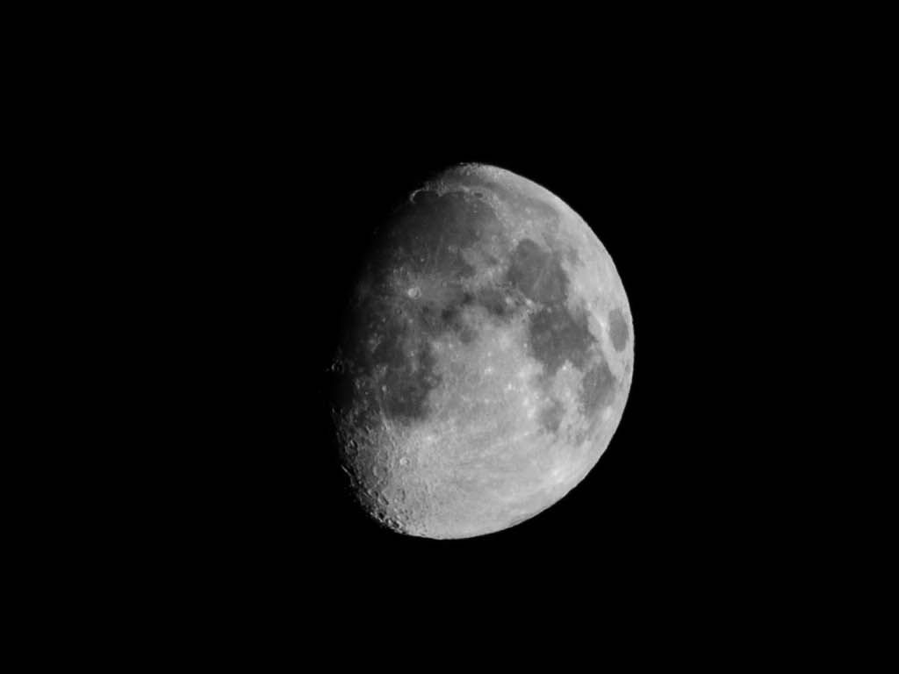
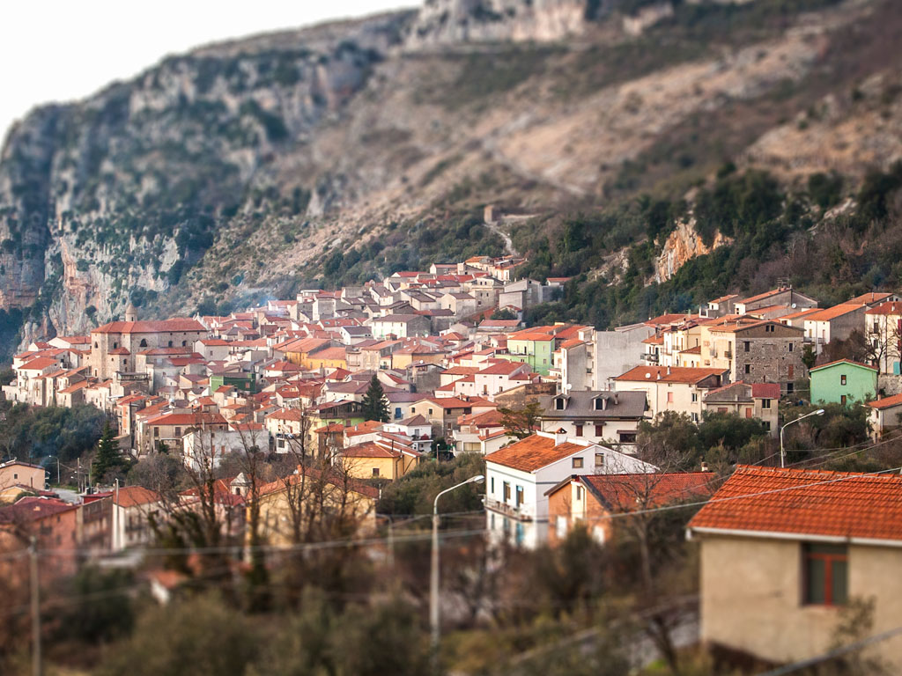
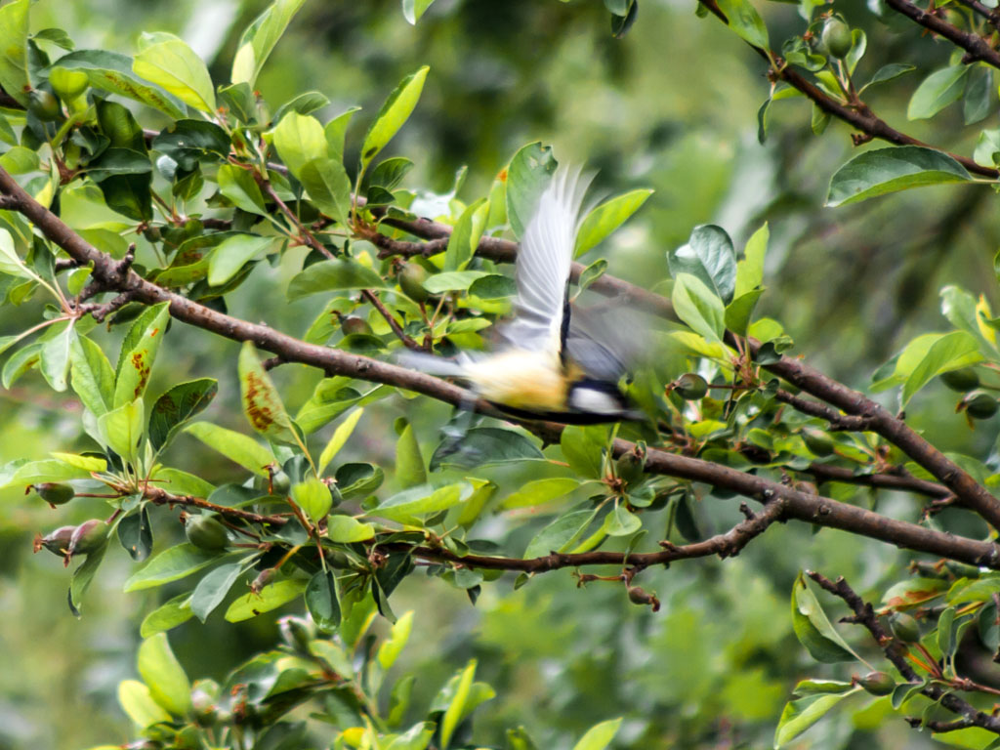
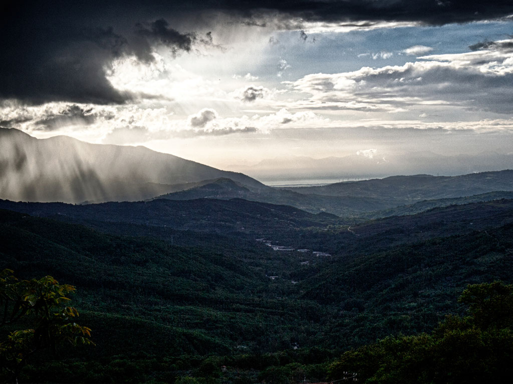
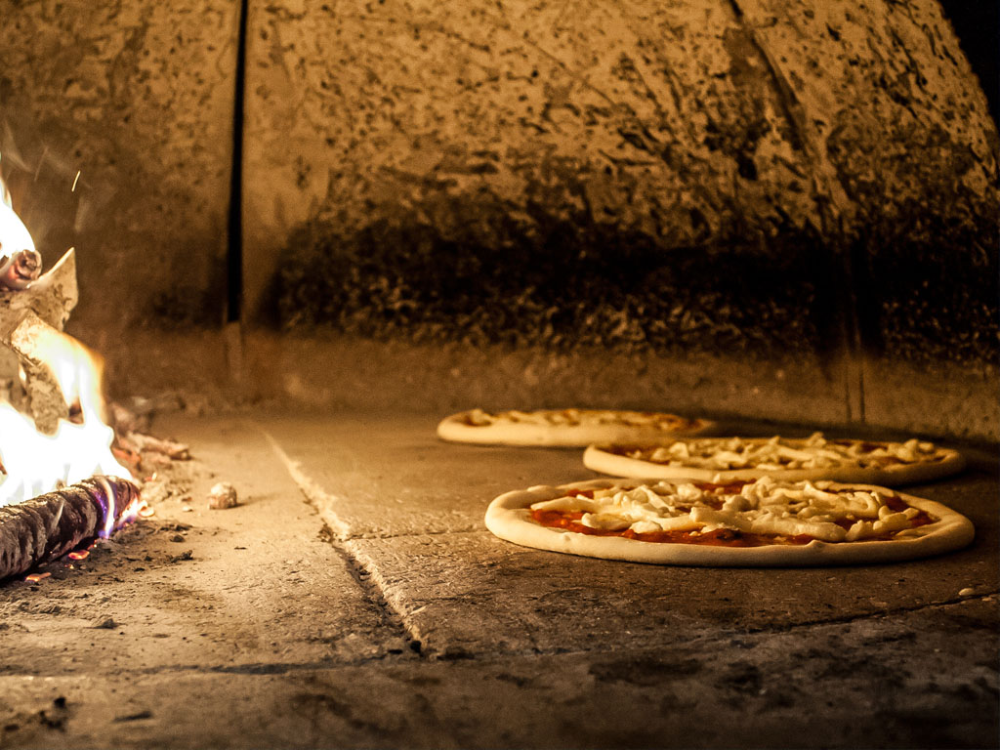

Photos that tell stories
The towns of the Province of Salerno offer beautiful places and moments for taking photos.
I walk with my old reflex camera whenever I can and never return empty-handed.




